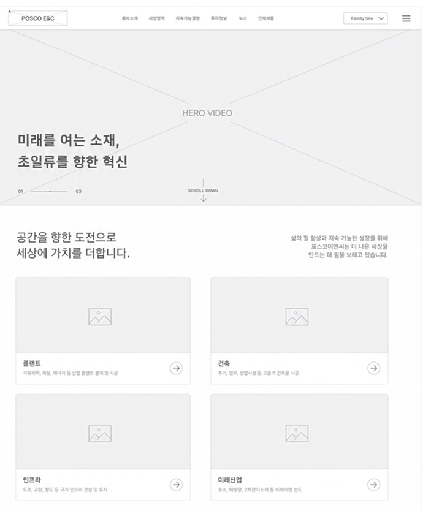
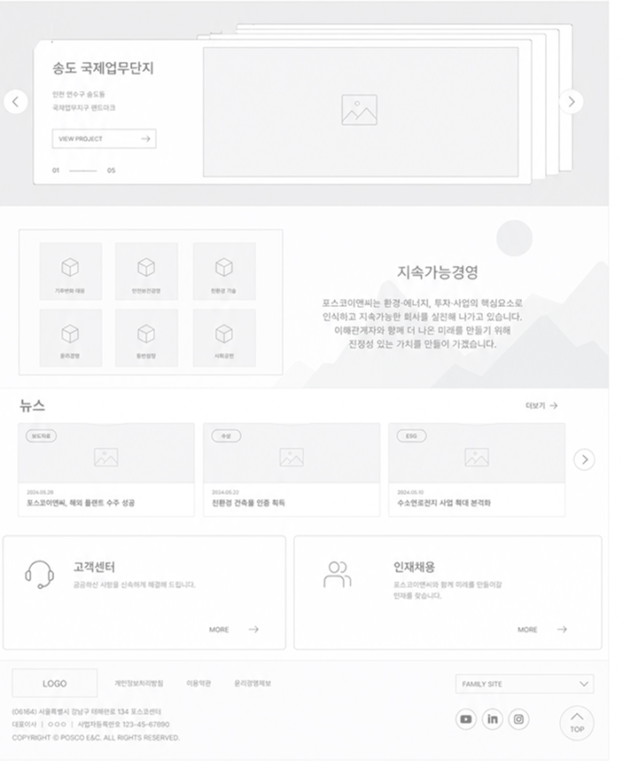
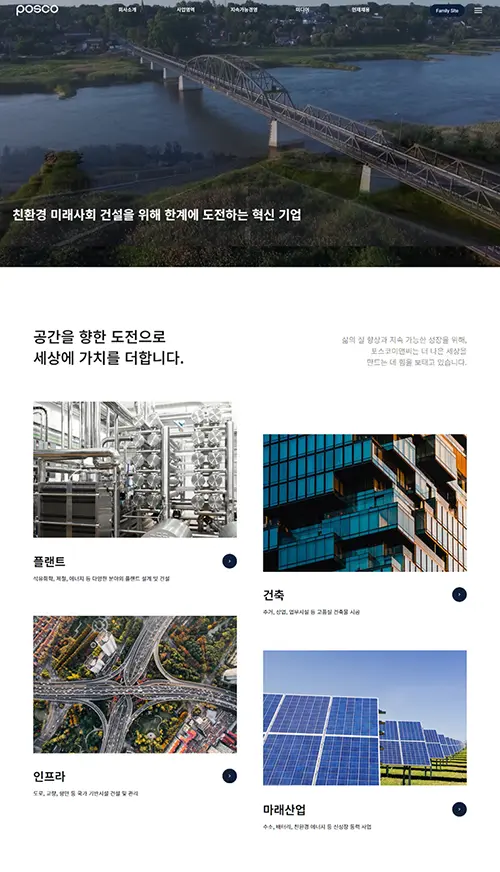
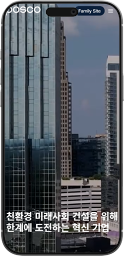
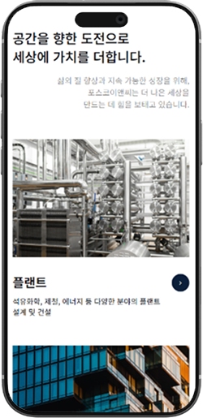
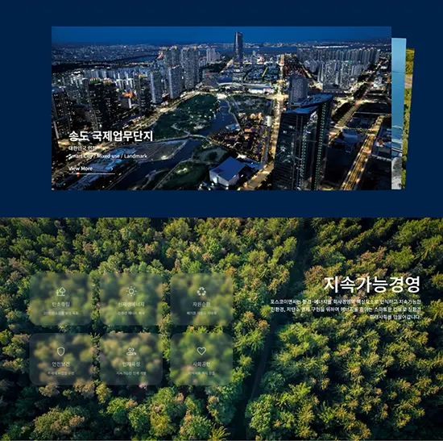
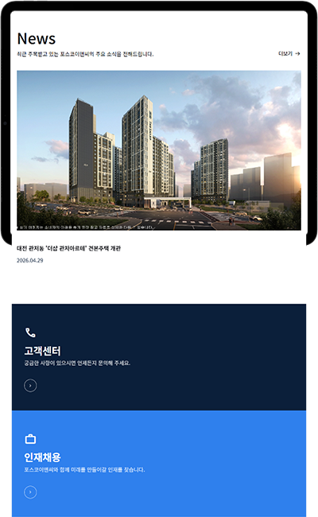

메인영역
POSCO E&C
Website Renewal.
친환경 미래 인프라를 건설하는 대한민국 대표 종합 건설사
포스코이앤씨는 친환경 미래 인프라 건설 및 스마트 기술을 선도하며, 프리미엄 주거 브랜드 더샵 · 오티에르를 보유한 대한민국 대표 종합 건설·엔지니어링 기업입니다. 하지만 전반적인 UI 구조와 인터랙션이 다소 보수적이고 정보 전달 중심으로 구성되어 브랜드 경험 측면에서 아쉬움이 있어 리뉴얼 프로젝트로 선정하게 되었습니다.
As-Is → To-Be.
현재 상태를 분석하고, 개선된 미래를 설계합니다.
AS-IS
TO-BE
정적인 레이아웃
전반적인 레이아웃과 인터랙션이 다소 정적이며, 스크롤 경험에서 변화가 적음
동적 스크롤 인터랙션
메인 영역 영상 삽입 · 동적 모션으로 브랜드 몰입감 강화
정보 밀도 과다
한 화면에 노출되는 정보량이 많아 사용 피로도가 높음
여백 중심의 카드 구조
카드형 레이아웃과 넉넉한 여백으로 정보 피로도 완화
브랜드 경험 부족
브랜드 감성과 몰입감 있는 경험이 부족하여 '리딩 기업'의 이미지가 표현되지 않음
컬러 시스템 재정비
진중한 딥블루와 회색, 화이트 기반 컬러 시스템으로 신뢰감과 미래 기술 이미지를 강화
누구를 위해 설계하는가.
연령대
기업 및 건설 산업에 관심 있는 30–40대 사용자.
특성
목적 중심의 빠른 정보 탐색, 신뢰도 높은 브랜드 가치를 추구.
방문 목적
기업정보 탐색 · 사업 분야 · 대표 프로젝트 확인.
디바이스
모바일 · PC 환경 모두에서 편리하게 탐색.
USER NEEDS — 사용자 니즈
- 기업의 기술력과 신뢰성을 직관적으로 확인
- 미래 비전 · 방향성을 시각적으로 경험
- 복잡하지 않은 정보 구조의 흐름
- 모바일 · PC 모두에서 편리한 탐색
" 친환경 미래 건설 "의
방향성을 담아낸
일관성 있는 경험으로.
브랜드 아이덴티티 강화
포스코이앤씨의 친환경 · 미래지향적 가치를 시각적으로 전달하는 일관된 디자인 시스템 구축
사용자 경험 최적화
직관적인 정보 구조와 네비게이션으로 모든 사용자가 빠르고 쉽게 원하는 정보에 접근
반응형 디자인 완성
모바일부터 데스크톱까지 모든 환경에서 최적화된 경험을 제공하는 완전한 반응형 구현
정보 구조 설계와
와이어프레임.
시각적 요소를 최소화한 상태에서 구조와 흐름을 설계하고, 콘텐츠와 인터랙션의 방향성을 정의했습니다.


디자인 컨셉
Intuitive
직관적복잡한 사업 구조와 정보를 명확하게 정리하여 사용자가 자연스럽게 탐색할 수 있는 경험을 제공합니다.
Immersive
몰입감 있는영상과 인터랙션 중심의 화면 구성을 통해 브랜드의 가치와 방향성에 깊이 몰입할 수 있도록 설계합니다.
Future-oriented
미래지향적인동적인 인터랙션과 기술 중심 비주얼을 활용하여 미래 산업을 선도하는 기업 이미지를 효과적으로 전달합니다.
사용자가 직관적인 탐색 경험을 통해 자연스럽게 브랜드에 몰입하고,
미래지향적인 경험을 제공합니다.
디자인 시스템
Color
Font Black #0A0B10텍스트
Primary Blue #00457C브랜드 메인 컬러 · CTA 버튼 · 링크
Deep Blue #0B1F3A로고 · 섹션 배경
Light Dark Blue #174A7C배경 · 카드 · 텍스트
Light Blue #2F80ED배경 · 카드 배경
Medium Gray #868E96보조 정보
White #FFFFFF배경 · 카드 · 다크 배경 텍스트
Dark Gray #1F2937라인
Typography
Pretendard Variable
헤더, 본문 등 한글 폰트에 사용 · Weights 400, 500, 600, 700
가나다라마 123
Montserrat
로고, 본문내용 등 영어 폰트에 사용 · Weights 400, 500, 600, 700, 800
Aa Bb Cc 123
개선 전략

정적인 이미지만 노출되어 브랜드 몰입감이 부족하였습니다.



주요 프로젝트가 리스트 형식으로 나열되어 임팩트 있는 실적 전달이 어려웠습니다.
텍스트 위주의 구성으로 지속가능경영의 가치와 규모가 충분히 전달되지 않았습니다.

뉴스 콘텐츠가 정적으로 나열되어 시선을 끌기 어려웠습니다.
고객센터와 인재채용 영역이 분리되어 있어 접근 동선이 길었습니다.
이미지 클릭 시 실제 사이트로 이동합니다
프로젝트 활용 툴.
HTML
마크업 구조 설계
CSS
스타일링 · 레이아웃
JavaScript
동적 인터랙션 구현
Figma
UI 디자인 · 프로토타이핑
Git
코드 버전 관리 · 협업
Premiere Pro
히어로 영상 편집
Photoshop
이미지 보정 · 합성
Chat GPT
AI협업 · 이미지생성
Gemini
AI협업 · 이미지생성
Claude
AI협업 · 리서치 보조
마무리
Thank you
for viewing.
POSCO E&C Website Renewal — Design Portfolio · 2026
메인 포트폴리오로 돌아가기© 2026. JIWON CHOI. ALL RIGHTS RESERVED.